Nyzo version 552 (commit on GitHub) adds the CycleTransactionSignScript.
This version does not affect the verifier or sentinel significantly. It adds a script, and it refactors some sentinel initialization code to allow the code to be reused cleanly by the script. The sentinel changes are minor, and they are isolated to the initialization process.
In Message, a new constructor has been added that allows specification of a seed for signing the message. This is a shortcut to using the existing constructor and using the sign() method to resign the message. Using this constructor saves the extra computation that would otherwise be needed to sign the message twice.
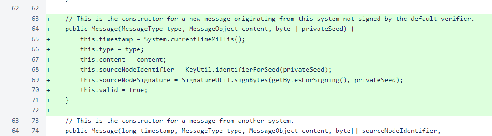In MessageType, a comment has been revised to provide a more accurate description.
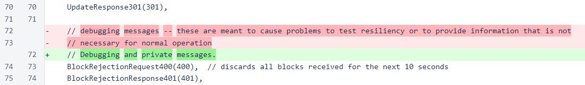The CycleTransactionSignScript takes a single argument, the Nyzo string of the transaction to be signed.
The script checks the signature, loads the managed verifiers, initializes the frozen edge, attempts to find the transaction, and fetches the cycle. These are all the pieces of information that are necessary to sign the transaction and send it to the cycle. If any of the necessary information is unavailable, the script prints an error message and exits.
The pattern of early return from a method is not frequently used in Nyzo. Generally, methods are allowed to reach the end of their code, and return statements are seldom found anywhere other than the final line of a method. However, this pattern is simple and easy to understand in the specific case of this method, and it is applied consistently for the entirety of the method.
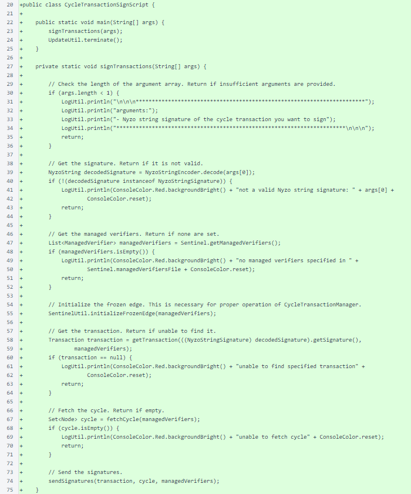The signature for a transaction can most easily be obtained from the Nyzo website cycle transactions page. When a transaction's sign this transaction button is selected, a page with the transaction details is displayed. On that page, the Nyzo signature string of the transaction is contained in the URL.
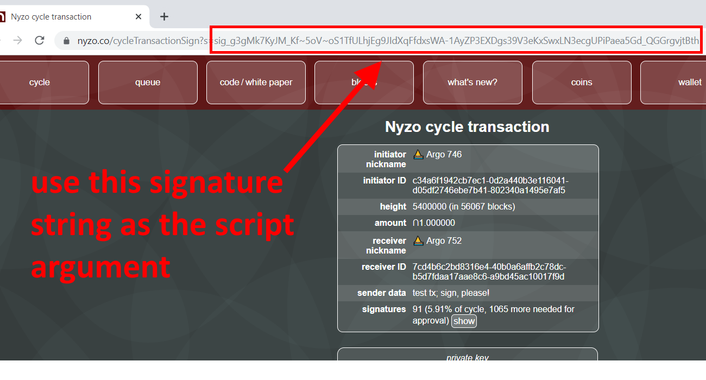If all the necessary information is found to be available, the signTransactions() method finishes by invoking the sendSignatures() method with the collected information.
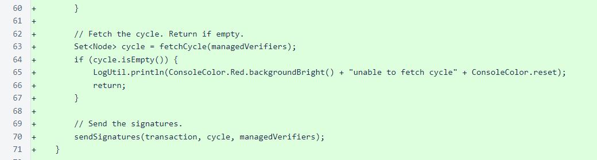The getTransaction() method uses the transaction signature to find a cycle transaction. All cycle transactions are registered with the CycleTransactionManager class. This method looks to the CycleTransactionManager as a source for the cycle transactions. If necessary, the method will query all of the managed verifiers to try to obtain the specified transaction.
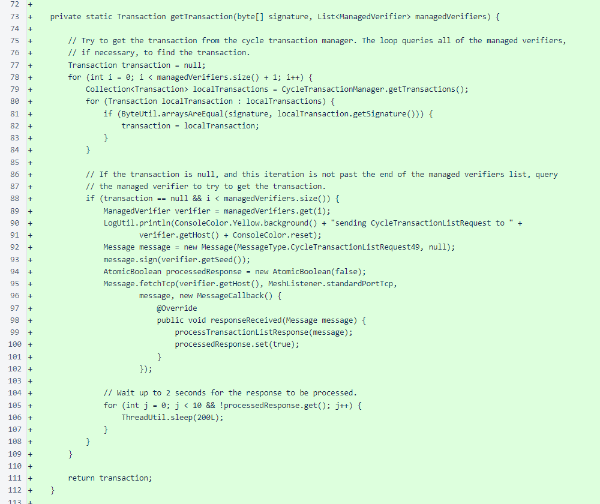The processTransactionListResponse() method registers received cycle transactions with the CycleTransactionManager.
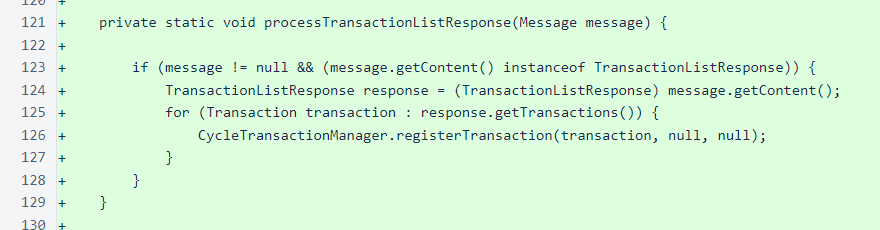The fetchCycle() method retrieves a list of all in-cycle nodes from one of the managed verifiers.
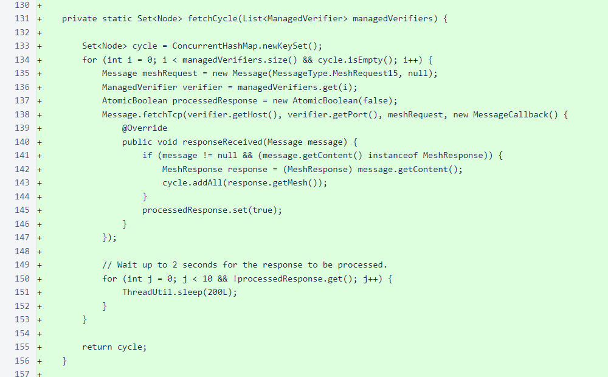The sendSignatures() method sends a signature for every managed verifier to every node in the cycle. So, a cycle of 1500 and 30 managed verifiers would result in 45,000 messages. As will be discussed below, the ScriptUtil.sendMessages() method allows such a large volume of messages to be sent relatively quickly.
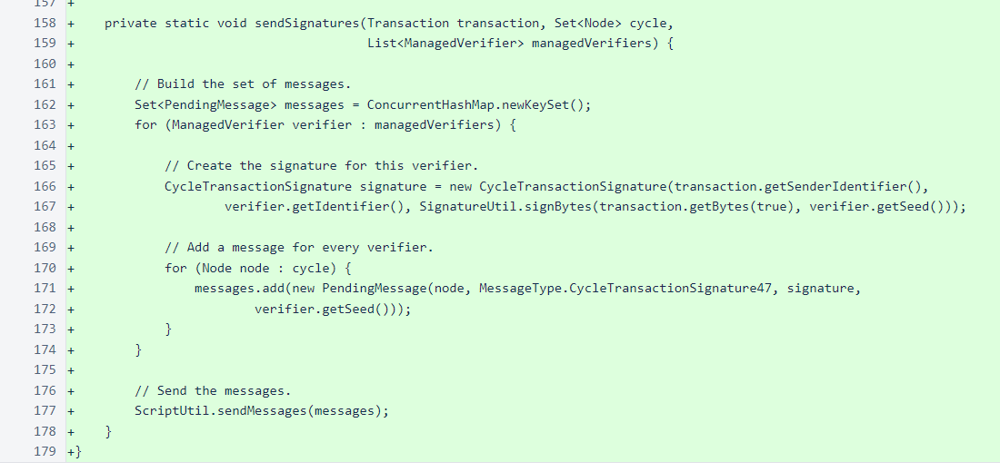The PendingMessage class encapsulates the information needed for building a Nyzo message and some tracking information to facilitate retries. This class is important — it, along with the ScriptUtil.sendMessages() method, allows for flexible, concise, robust, and efficient sending of large volumes of messages.
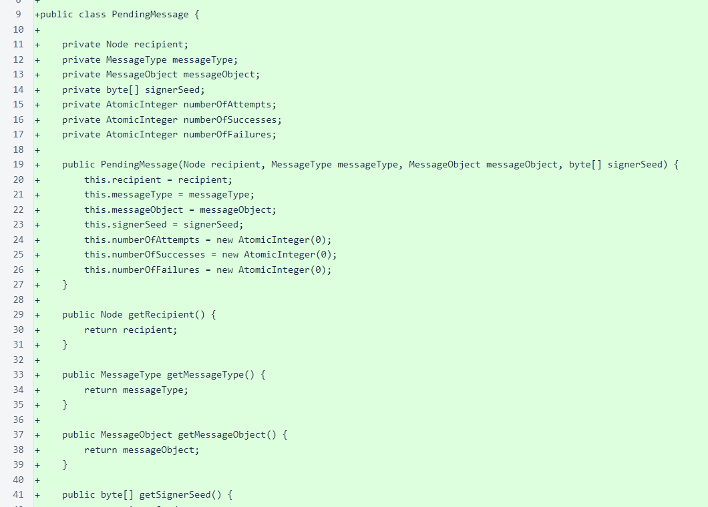In ScriptUtil, two parameters have been added for the new sendMessages() method. The maximumInFlightRequests parameter limits how many requests are allowed to be awaiting response simultaneously, and the maximumMessageAttempts parameter limits how many times a message is sent, regardless of whether it receives a valid response.
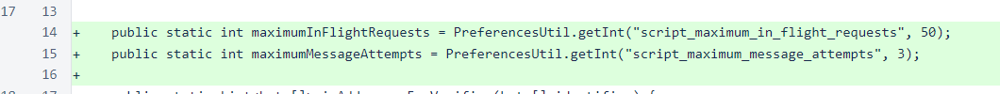The sendMessages() method sends no more than one message per loop iteration. If no suitable message is found, the thread sleeps for a short period to allow responses and errors to be registered. The method is designed to ensure that every message specified in the set either receives a valid response or is attempted the maximum number of times specified by the maximumMessageAttempts parameter.
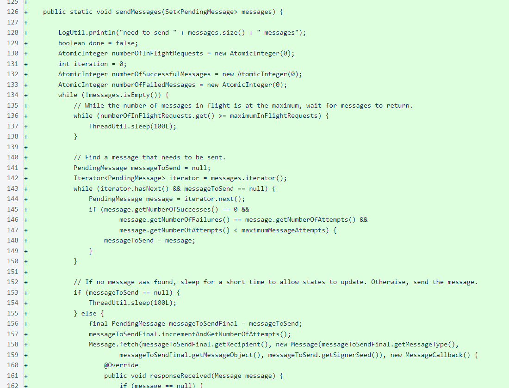In Sentinel, the managedVerifiersFile field has been exposed publicly to allow it to be used in an error message in CycleTransactionSignScript when the managed_verifiers file is empty or missing.
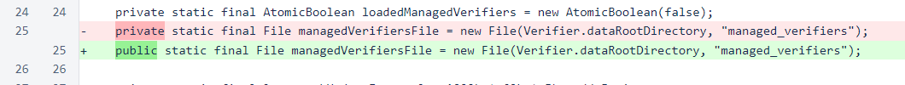Fetching and processing of bootstrap responses has been moved from the Sentinel class to the initializeFrozenEdge() method of the SentinelUtil class. This refactoring was performed to allow CycleTransactionSignScript to share the method.
Storage of frozenEdge and setting of lastBlockReceivedTimestamp were previously in the processBootstrapResponse() method. These were specific to the Sentinel class, and therefore not suitable for sharing with the CycleTransactionSignScript.
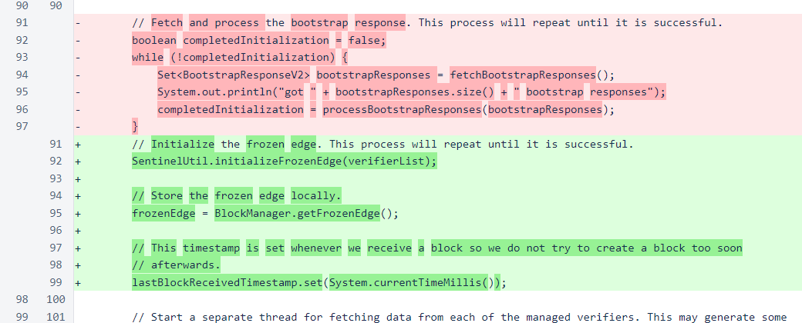Most of the code moved from Sentinel to SentinelUtil was left unchanged. The only consequential code block that was eliminated was the initial entry into fast-fetch mode. This was eliminated because it was not truly necessary and because the absence of chainFrozenEdge in the Sentinel.start() method added minor complication to potential reimplementation of this functionality in that method. Now, the sentinel does not start in fast-fetch mode. However, as has always been the case, it quickly switches to fast-fetch mode if necessary.
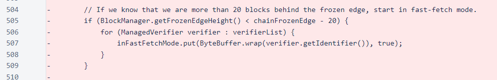To use the new script, configure a managed_verifiers file just as you would for a sentinel. Then, after updating to version 552 or later, run the following command from the nyzoVerifier directory, replacing the signature with the signature of the cycle transaction you want to sign:
sudo java -jar build/libs/nyzoVerifier-1.0.jar co.nyzo.verifier.scripts.CycleTransactionSignScript sig_g3gMk7KyJM_Kf~5oV~oS1TfULhjEg9JIdXqFfdxsWA-1AyZP3EXDgs39V3eKxSwxLN3ecgUPiPaea5Gd_QGGrgvjtBth
The command can be run on a system devoted to running scripts, or it can be run on an existing sentinel, including while the sentinel is running.